在前一章中，我们介绍了线性神经网络，它已被证明对回归等问题是有效的，因此在行业中得到广泛应用。然而，我们也看到它们有其局限性，不能有效地处理高维问题。
在本章中，我们将深入了解多层感知器 ( MLP )，一种前馈神经网络 ( FNN )。我们将从生物神经元如何处理信息开始，然后我们将转向生物神经元的数学模型。我们将在本书中学习的人工神经网络 ( ANNs )是由生物神经元的数学模型组成的(我们将很快了解更多)。一旦我们建立了一个基础，我们将继续了解MLP——即FNN——如何工作以及它们与深度学习的关系。
模糊神经网络使我们能够近似一个将输入映射到输出的函数，这可以用于各种任务，例如预测房子或股票的价格，或者确定某个事件是否会发生。
本章包括以下主题:
- 理解生物神经网络
- 比较感知器和麦卡洛克-皮茨神经元
- MLPs
- 训练神经网络
- 深度神经网络
人类的大脑有一些非凡的能力——它执行非常复杂的信息处理。组成我们大脑的神经元连接非常紧密，并与其他神经元并行工作。这些生物神经元通过它们之间的连接(突触)接收信号并将信号传递给其他神经元。这些突触具有与之相关的强度，增强或减弱神经元之间的连接强度有助于我们的学习，并允许我们不断学习和适应我们生活的动态环境。
众所周知，大脑由神经元组成——事实上，根据最近的研究，据估计，人类大脑包含大约860亿个神经元。有很多神经元和更多的连接。每天都有大量的神经元被同时使用，使我们能够完成各种任务，成为社会中有功能的成员。据说神经元本身非常慢，但正是这种大规模并行操作赋予了我们的大脑非凡的能力。
下面是一个生物神经元的示意图:
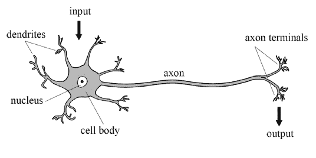
从上图中可以看出，每个神经元都有三个主要组成部分——身体、轴突和许多树突。突触将一个神经元的轴突连接到其他神经元的树突，并决定从其他神经元接收的信息的权重。只有当神经元的加权输入之和超过某个阈值时，神经元才会触发(激活)；否则，它处于静止状态。神经元之间的这种交流是通过电化学反应完成的，涉及钾、钠和氯(我们不会深入讨论，因为这超出了本书的范围；然而，如果你对这个感兴趣，你可以在上面找到很多文献。
我们关注生物神经元的原因是，我们将在本书中学习和开发的神经元和神经网络在很大程度上是受生物学启发的。如果我们试图开发人工智能，还有什么比从实际智能中学习更好的呢？
因为这本书的目的是教你如何在计算机上开发人工神经网络，所以我们来看看我们大脑的计算能力与计算机的计算能力之间的差异是相对重要的。
计算机比我们的大脑有明显的优势，因为它们每秒可以执行大约100亿次运算，而人脑每秒只能执行大约800次运算。然而，大脑运行大约需要10瓦，比计算机需要的功率少10倍。计算机的另一个优势是其精确性；它们的运算精度可以提高数百万倍。最后，计算机按顺序执行操作，不能处理它们没有被编程处理的数据，但大脑并行执行操作，并能很好地处理新数据。
在这一节中，我们将涵盖生物神经元的两个数学模型——T2的麦卡洛克-皮茨的T3神经元和罗森布拉特的感知器，它们为神经网络奠定了基础。
MP神经元是由沃伦麦卡洛克和沃尔特皮茨在1943年创造的。它模仿生物神经元，是生物神经元的第一个数学模型。它主要是为分类任务创建的。MP神经元将二进制值作为输入，并基于阈值输出二进制值。如果输入之和大于阈值，则神经元输出1(如果低于阈值，则输出0)。在下图中，我们可以看到一个具有三个输入和一个输出的基本神经元的样子:
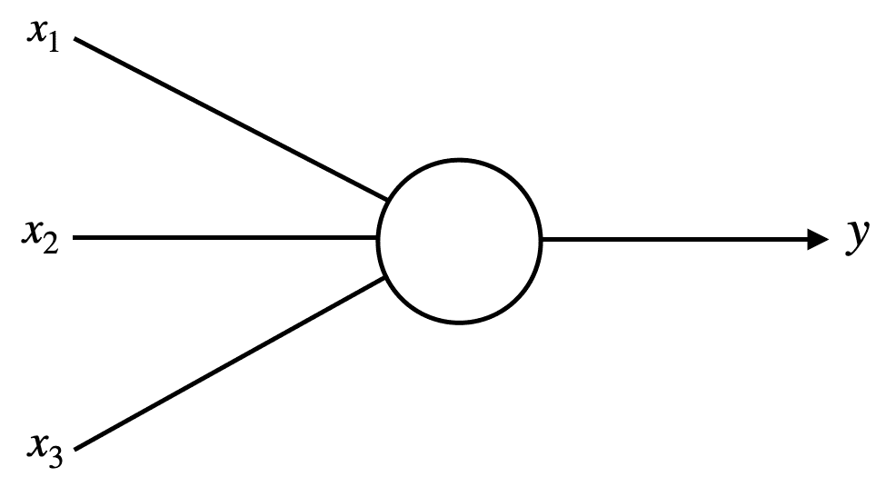
如你所见，这与我们之前看到的生物神经元并没有完全不同。
数学上，我们可以这样写:
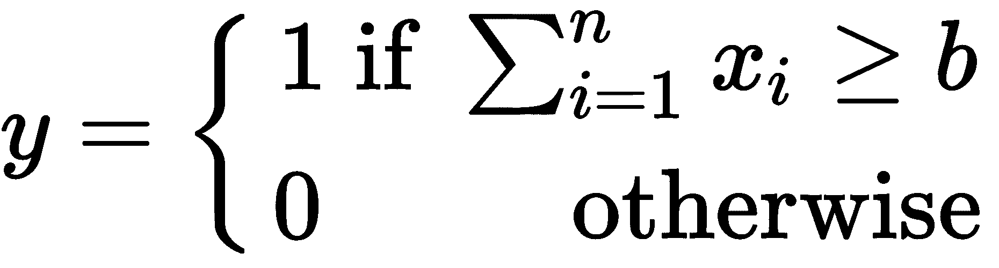
这里， x i = 0或者1。
我们可以认为这是输出布尔答案；也就是true或者false(或者yes或者no)。
虽然MP神经元可能看起来很简单，但它有能力模拟任何逻辑功能，如OR、AND和NOT；但是无法对XOR功能进行分类。此外，它不具备学习能力，因此需要通过分析调整阈值( b )以适应我们的数据。
感知机模型是由Frank Rosenblatt在1958年创建的，是MP神经元的改进版本，可以接受任何实值作为输入。然后，每个输入乘以一个实值权重。如果加权输入之和大于阈值，则输出为1，如果小于阈值，则输出为0。下图说明了一个基本的感知器模型:
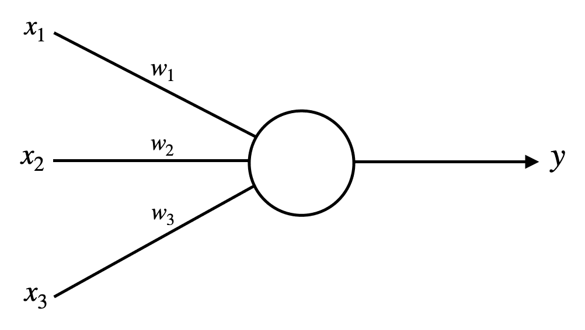
这个模型与MP神经元有许多相似之处，但它更类似于生物神经元。
数学上，我们可以这样写:
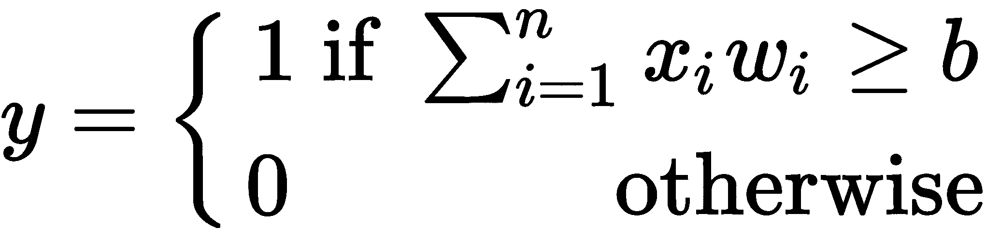
这里， 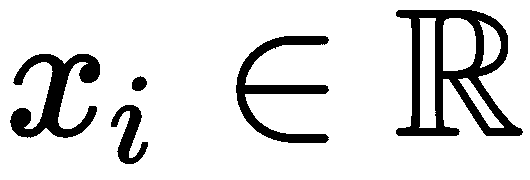 。
有时，我们将感知器方程改写为以下形式:
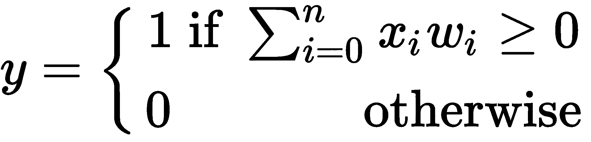
下图显示了感知器方程的样子:
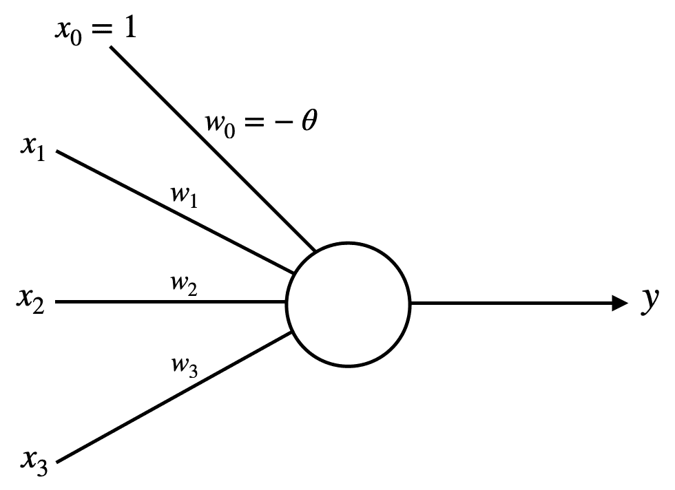
在这里，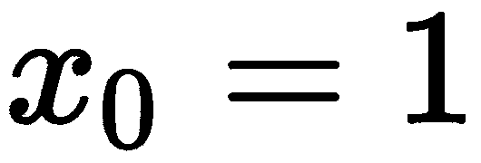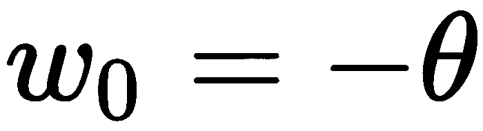。这使我们不必硬编码阈值，这使阈值成为一个可学习的参数，而不是我们必须手动调整的参数(MP神经元就是这种情况)。
感知器模型相对于MP神经元的优势在于，它能够通过纠错进行学习，并使用超平面线性分离问题，因此任何低于超平面的都是0，任何高于超平面的都是1。这种误差校正允许感知器调整权重并移动超平面的位置，以便它可以正确地对数据进行分类。
早些时候，我们提到了感知机学习对问题进行线性分类——但它到底学习了什么？它是否了解所提问题的性质？不。它学习输入对输出的影响。所以，与某个输入相关联的权重越大，它对预测(分类)的影响就越大。
权重(学习)的更新如下进行:
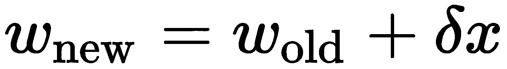
这里， δ =期望值-预测值。
如果我们想加快学习速度，我们还可以添加一个学习速率(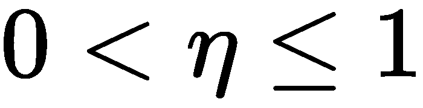)；因此，更新如下:
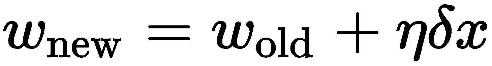
在这些更新过程中，感知器计算超平面与要分类的点之间的距离，并自我调整以找到能够完美线性分类两个目标类的最佳位置。因此，它最大限度地将两侧的两点分开，我们可以在下图中看到这一点:

更令人着迷的是，由于前面提到的学习规则，当给定有限数量的更新时，感知器保证收敛，因此可以处理任何二进制分类任务。
但是，唉，感知器也不是完美的，它也有局限性。因为它是线性分类器，所以它不能处理非线性问题，而非线性问题是我们通常希望开发解决方案的大部分问题。
如上所述，MP神经元和感知器模型都无法处理非线性问题。为了解决这个问题，现代感知器使用一个激活函数，在输出中引入非线性。
我们将使用以下形式的感知器(神经元，但我们将主要将其称为节点):
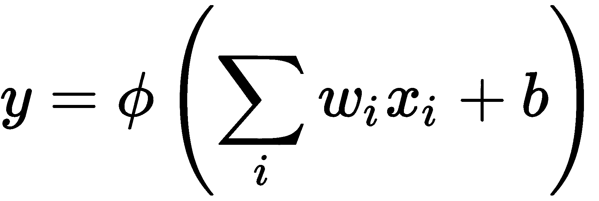
这里， y 是输出， φ 是非线性激活函数，xIT20】是单元的输入，wIT24】是权值， b 是偏差。感知器的改进版本如下:
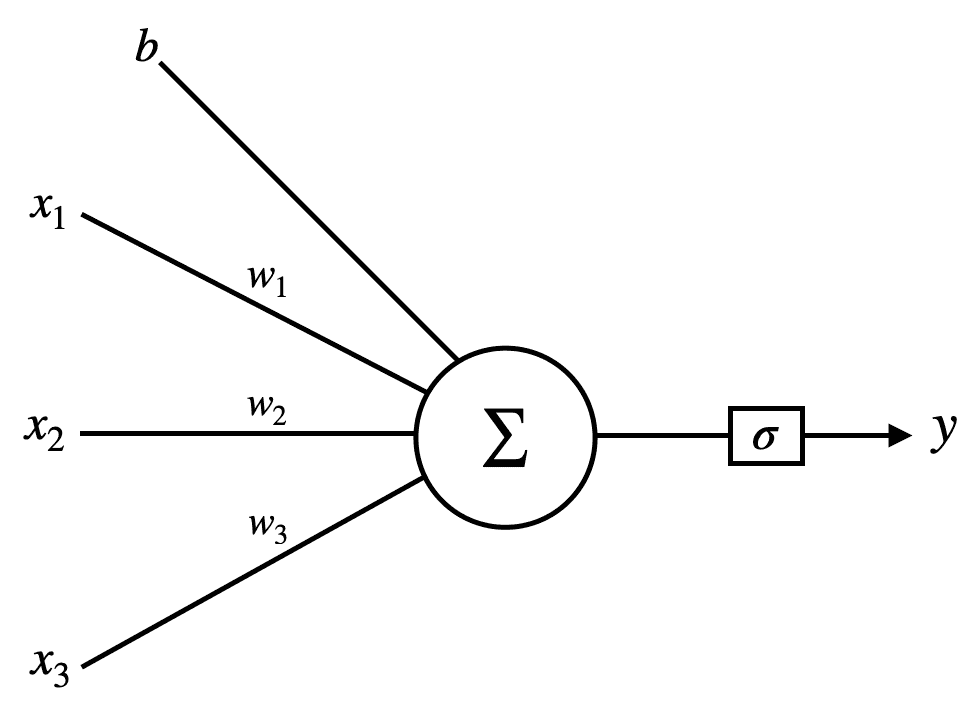
在上图中，激活函数通常是sigmoid函数:
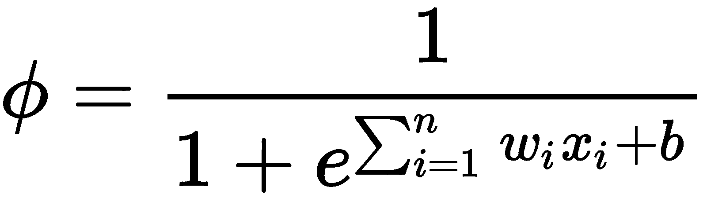
sigmoid激活功能的作用是将所有输出值压缩到(0, 1)范围内。sigmoid激活函数主要用于历史目的，因为早期神经元的开发者专注于阈值处理。当引入基于梯度的学习时，sigmoid函数被证明是最佳选择。
MLP是最简单的FNN。它基本上是许多节点组合在一起，计算是按顺序进行的。网络看起来如下:
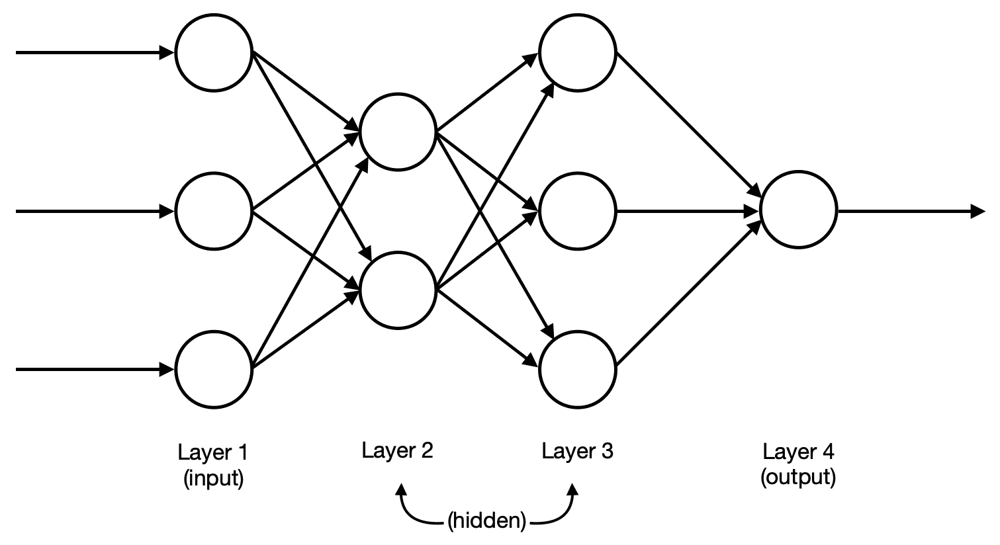
FNN本质上是一个有向无环图；也就是说，连接总是朝一个方向移动。没有将输出反馈到网络的连接。
正如您在前面的图表中所看到的，节点按层排列，每层中的节点都连接到下一层中的每个神经元。但是，同一层中的节点之间没有任何连接。我们称这样的网络为全连接网络。
第一层称为输入层，最后一层称为输出层，中间的所有层称为隐藏层。输出层中的节点数量取决于我们为其构建MLP的问题类型。请记住，层的输入和输出不同于网络的输入和输出，这一点很重要。
您可能还注意到，在前面的架构中，输出层只有一个单元。当我们有一个回归或二进制分类任务时，通常就是这种情况。因此，如果我们希望我们的网络能够检测多个类，那么我们的输出层将有 K 个节点，其中 K 是类的数量。
注意，网络的深度是它的层数，宽度是一层中的节点数。
然而，是什么使得神经网络如此有效，以及我们研究它们的原因，是它们是通用的函数逼近器。通用逼近定理陈述了“在对激活函数的温和假设下，具有包含有限数量神经元的单个隐藏层的前馈神经网络可以逼近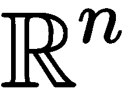的紧致子集上的连续函数。
“这意味着，如果隐藏层包含特定数量的神经元，那么我们的神经网络可以合理地逼近任何已知的函数。
你会注意到，还不清楚隐藏层需要多少神经元才能逼近任何函数。这可能会有很大的不同，取决于我们想要它学习的功能。
到现在为止，你可能会想，如果MLP从20世纪60年代末就已经存在了，为什么要花将近50年的时间才像今天这样被广泛使用呢？这是因为50年前可用的计算能力远没有今天可用的强大，当时也没有现在可用的相同数量的数据。因此，由于当时MLPs没有取得什么成果，他们就变得默默无闻了。由于这个原因，以及通用近似定理，当时的研究人员没有深入研究几层。
让我们分解一下这个模型，看看它是如何工作的。
我们现在知道MLP(以及FNN)由三种不同的层组成——输入层、隐藏层和输出层。我们也知道单个神经元的样子。现在，让我们从数学角度探索MLP及其工作原理。
假设我们有一个具有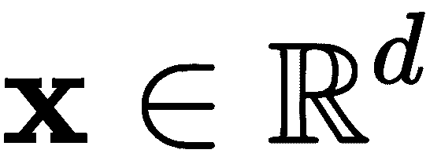输入(其中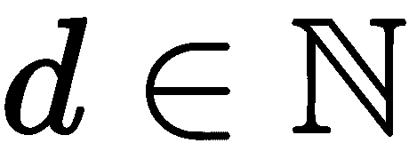)、 L 层、 N 层神经元、一个激活函数 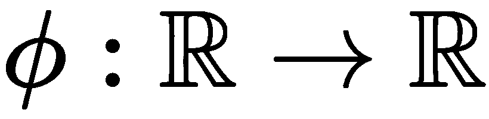 和网络输出 y 的MLP。MLP看起来如下:
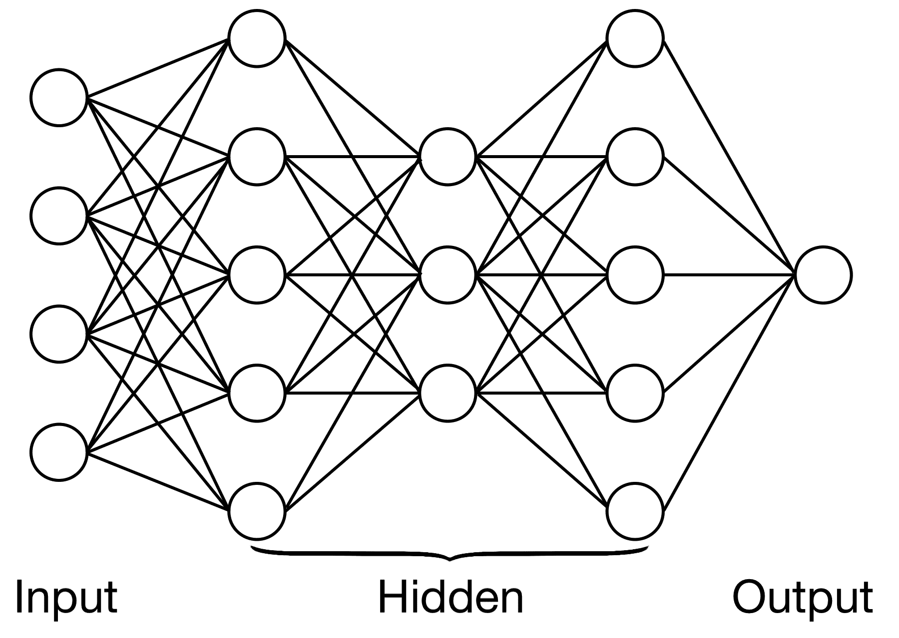
如您所见，此网络有四个输入—第一个隐藏层有五个节点，第二个隐藏层有三个节点，第三个隐藏层有五个节点，还有一个节点用于输出。数学上，我们可以这样写:
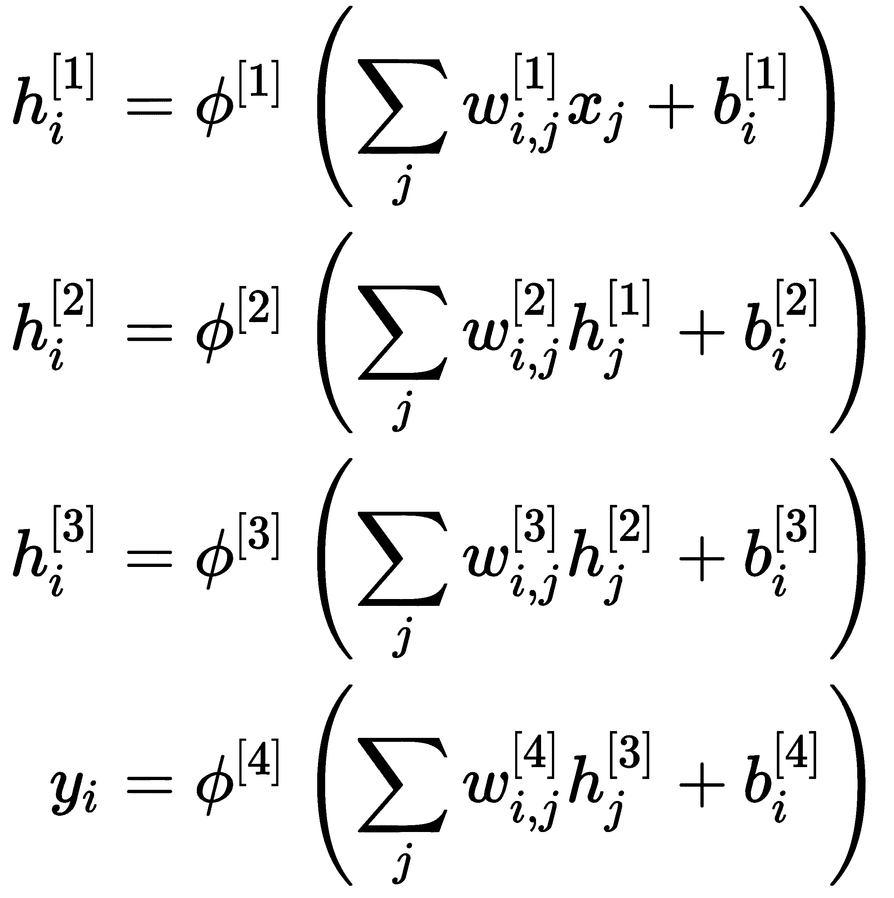
这里， 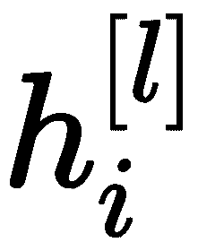 是 l 第 层中的 i 第 节点， 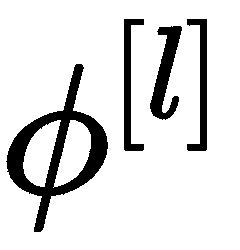 是对l层的激活函数， x j 是对网络输入的j， 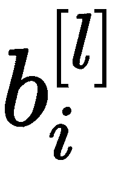 是lth层中第I节点的偏移， 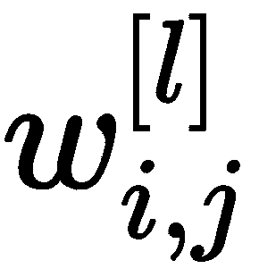 是将l–1ST层中的 j th 节点连接到的有向权重
在我们继续之前，让我们看一下前面的等式。从中，我们可以很容易地观察到，每个隐藏节点都依赖于前一层的权重。如果你拿一支铅笔把网络画出来(或者用手指描出连接)，你会注意到，我们进入网络越深，后面隐藏层中的节点与前面层中的节点的关系就越复杂。
现在，您已经了解了如何在MLP中计算每个神经元，您可能已经意识到，明确写出每层中每个节点的计算结果可能是一项艰巨的任务。因此，让我们以一种更清晰、更简单的方式重写前面的等式。我们通常不根据每个节点上发生的计算来表达神经网络。相反，我们用层来表示它们，因为每层都有多个节点，所以我们可以用向量和矩阵来写前面的方程。先前的等式现在可以写成如下:
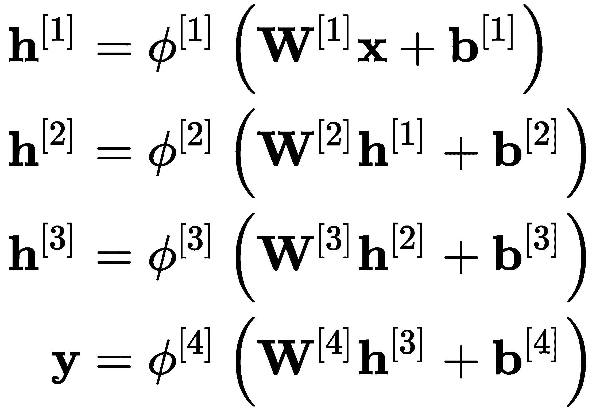
这就简单多了。
还记得从第二章、线性代数中得知，当你将一个向量或矩阵乘以一个标量值时，这个标量值应用于所有的条目。
对于我们想要构建的网络，输入很可能不是向量，就像前面的例子一样；这将是一个矩阵，所以我们可以重写如下:
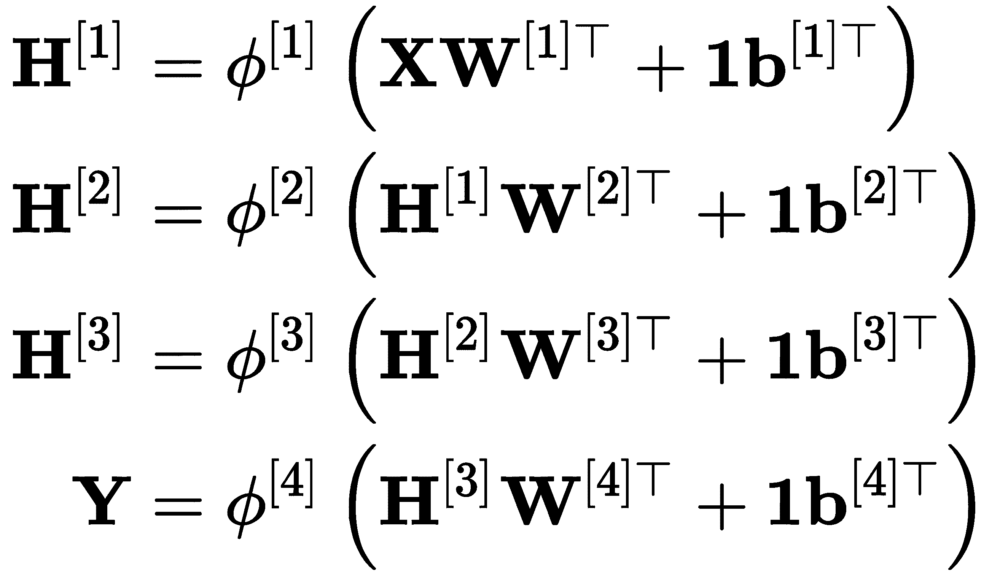
这里，X是包含我们想要训练我们的模型的所有数据的矩阵，H【l】包含所有数据样本的每一层的隐藏节点，其他一切都与之前相同。
如果你一直在注意，你会注意到矩阵中发生的乘法的顺序与之前发生的不同。你认为这是为什么？(给你个提示——转置。)
您现在应该对神经网络是如何构建的有了一个不错的、高层次的理解。现在让我们打开引擎盖，看看下面发生了什么。从前面的等式中我们知道，神经网络由一系列矩阵乘法、矩阵加法和标量乘法组成。因为我们现在处理的是向量和矩阵，所以它们的维数很重要，因为如果它们没有正确排列，我们就不能相乘和相加。
让我们以完整的矩阵形式来看前面的MLP。(为了简单起见，我们将一层一层地进行，我们将使用第二种形式，因为我们的输入是矢量形式。)为了简化视图并正确理解正在发生的事情，我们现在将表示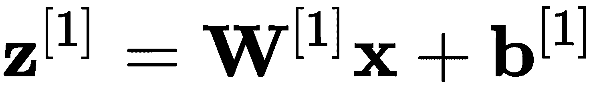和 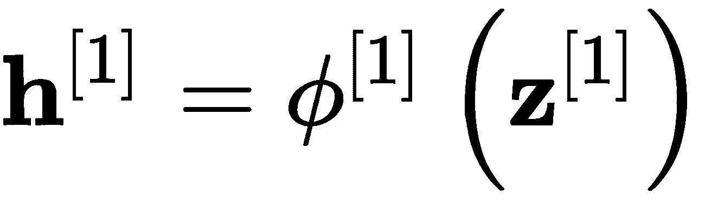 。
计算z【1】如下:
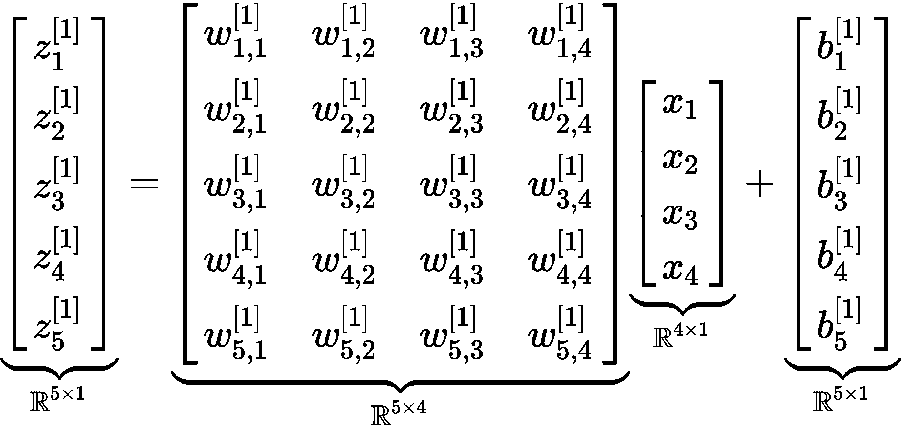
计算h【1】如下:
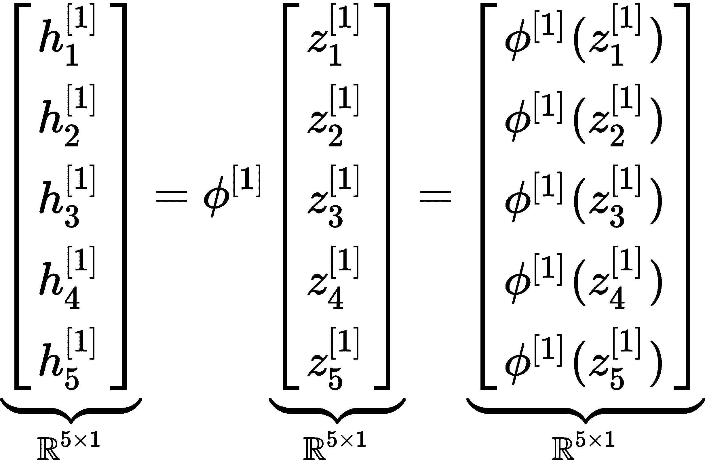
计算z【2】如下:
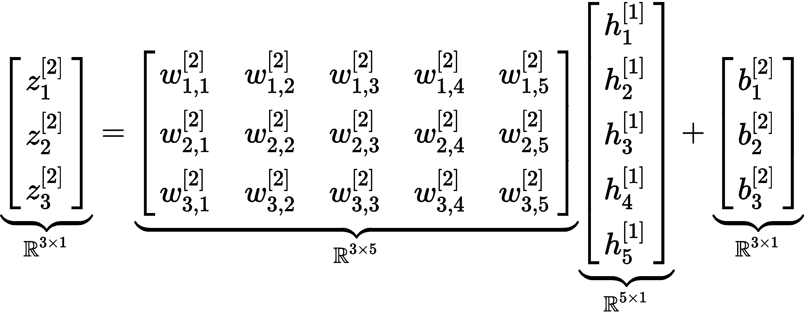
计算h【2】如下:
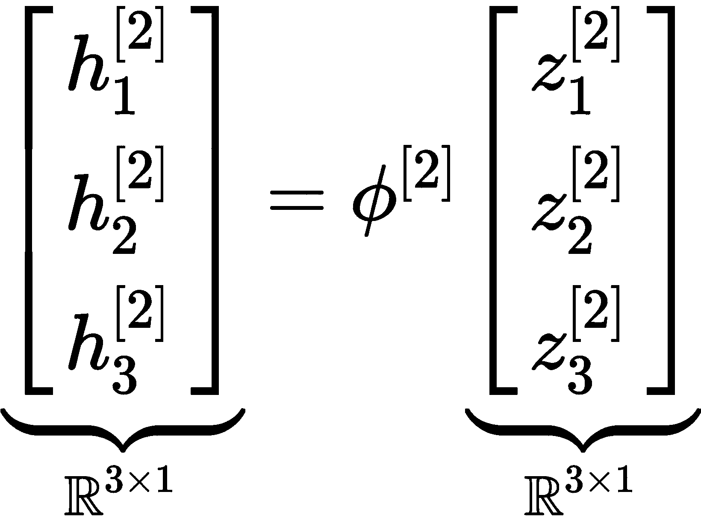
计算z【3】如下:
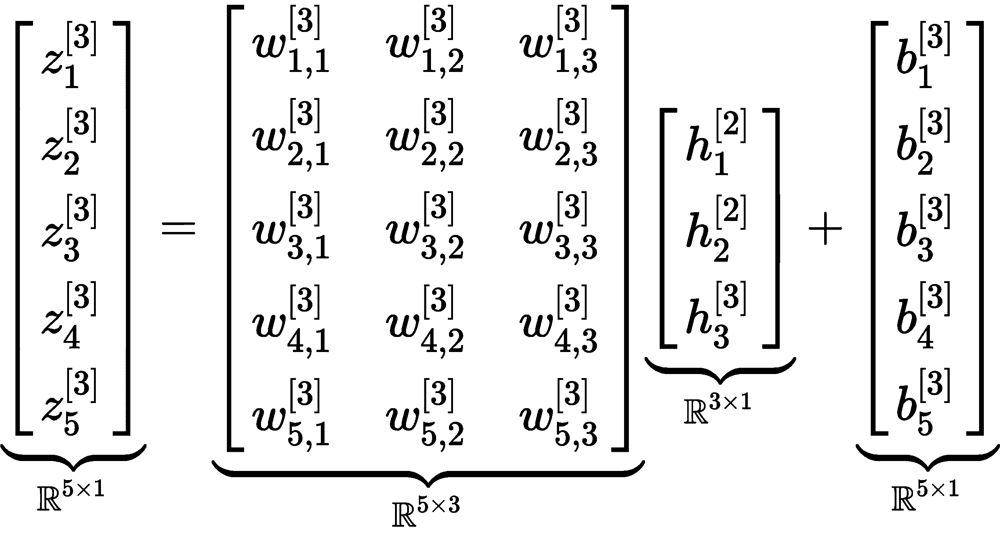
计算h【3】如下:
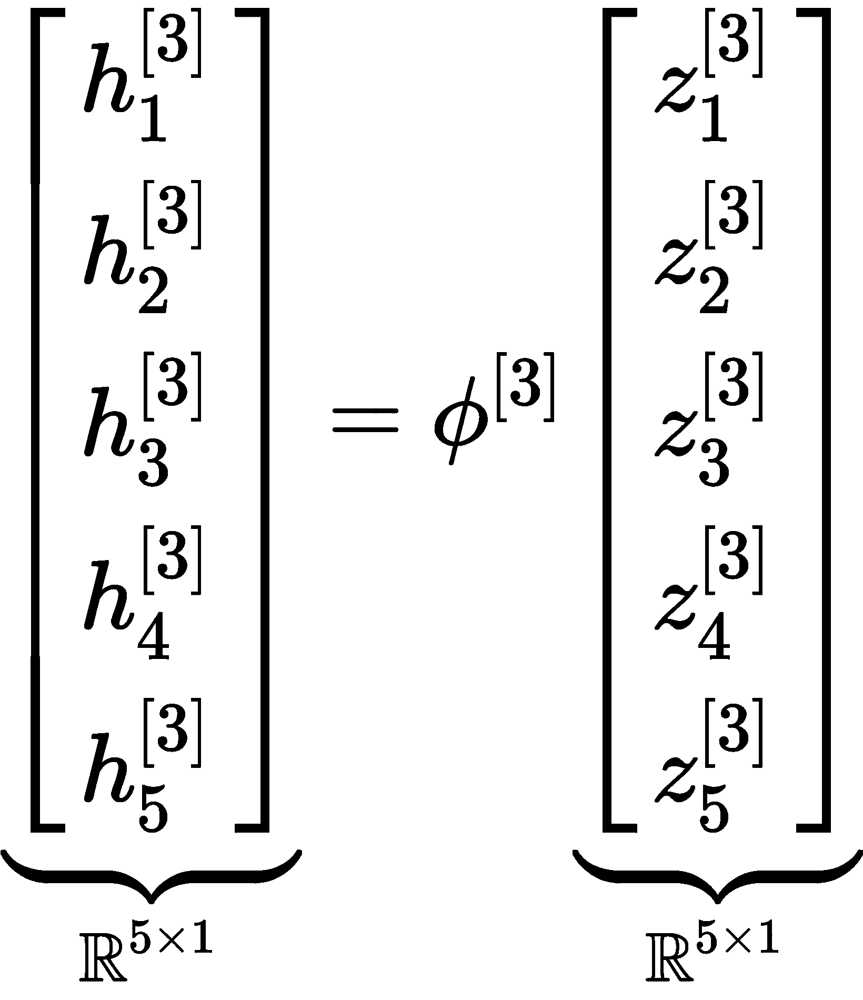
计算z【4】如下:
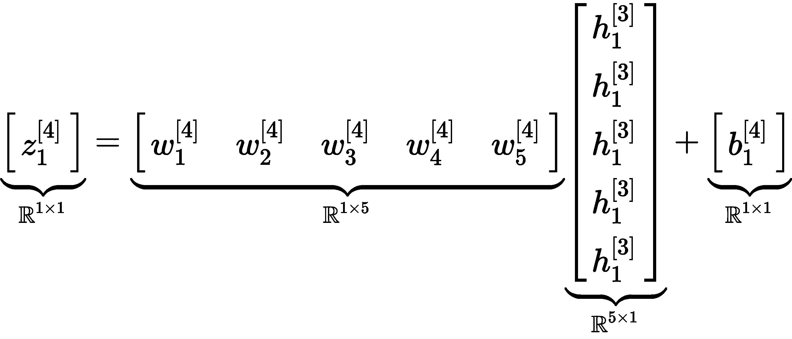
计算 y 如下:
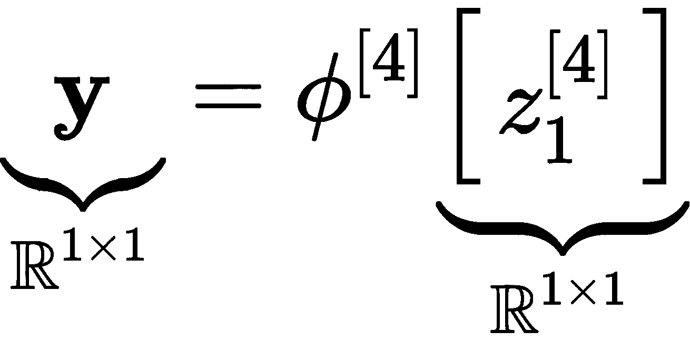
我们找到了。这些都是发生在我们MLP的行动。
我稍微调整了一下前面的符号，将 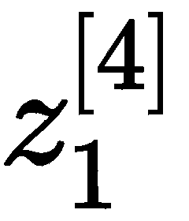 放在括号中，并将 y 写成一个向量，尽管它显然是一个标量。这样做只是为了保持流动，避免改变符号。 y 是一个向量，如果我们使用 k 类分类(给我们多个输出神经元)。
现在，如果你回想一下第2章、线性代数，在那里我们做了矩阵乘法，我们知道当一个矩阵或向量乘以另一个不同维数的矩阵时，那么得到的矩阵或向量是不同的形状(当然，除了当我们乘以单位矩阵时)。我们称之为映射是因为我们的矩阵将一个空间中的点映射到另一个空间中的点。记住这一点，让我们再来看看我们在MLP进行的操作。由此，我们可以推断，我们的神经网络将我们的输入向量从一个欧几里得空间映射到我们在另一个欧几里得空间的输出向量。
利用这一观察，我们可以归纳并写出以下内容:
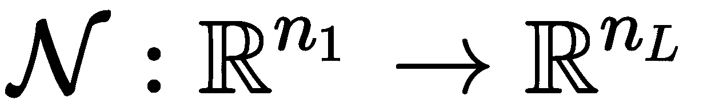
这里， 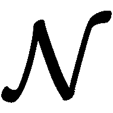 是我们的MLP， 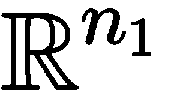 是输入层维度的节点数， 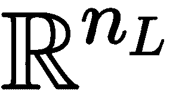 是输出层的节点数， L 是总层数。
然而，在前面的网络中有许多矩阵乘法，每个矩阵乘法都有不同的维数，这告诉我们发生了一系列映射(从一层到下一层)。
然后，我们可以分别编写映射，如下所示:
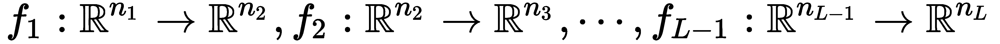
这里，每个fIT29】值将 l 第 层映射到 l+1 第 层。为了确保我们已经覆盖了所有的基地，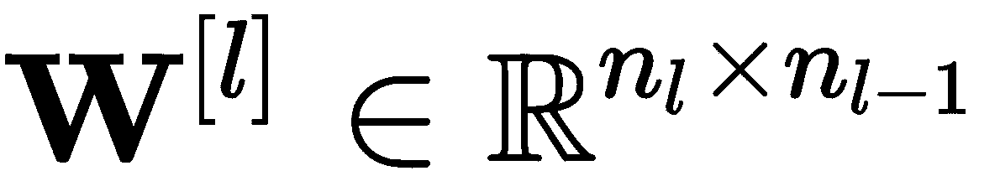和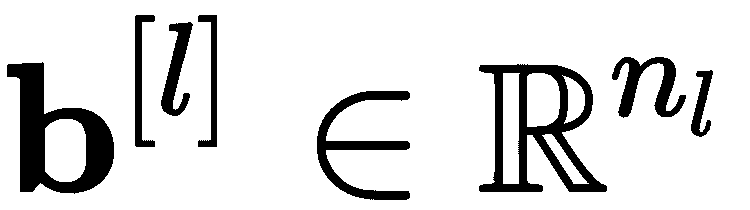。
现在，我们可以用下面的等式来总结我们的MLP:
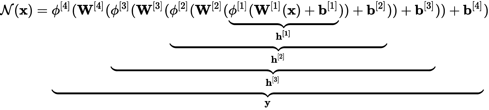
做完这些，我们现在可以进入下一小节，在这里我们将理解激活函数。
到目前为止，我们已经提到过几次激活函数，我们还介绍了其中的一个sigmoid激活函数。然而，这并不是我们在神经网络中使用的唯一激活函数。事实上，这是一个活跃的研究领域，今天，有许多不同类型的激活功能。它们可以分为两种类型——线性和非线性。我们将集中讨论后者，因为它们是可微的，这一性质在我们训练神经网络时非常重要。
首先，我们来看看sigmoid，因为我们已经遇到过它了。sigmoid函数的写法如下:
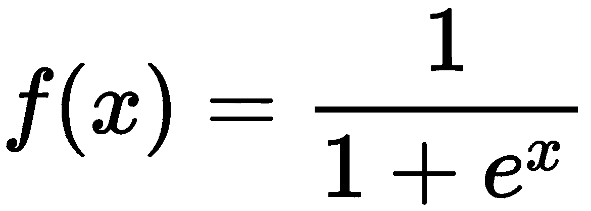
该函数如下所示:
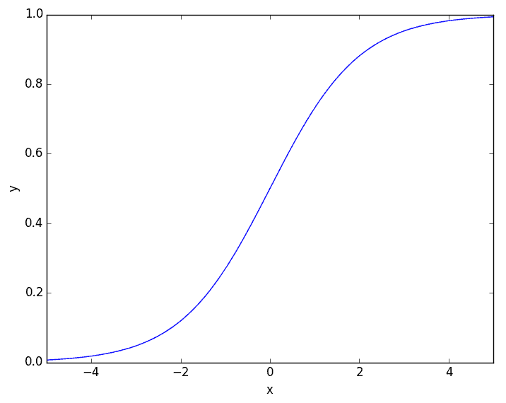
sigmoid激活函数将加权输入和偏差之和作为输入，并将该值压缩到(0, 1)范围内。
它的导数如下:
导数将如下所示:
该激活函数通常用于输出层，用于预测基于概率的输出。我们避免在深层神经网络的隐藏层中使用它，因为它会导致所谓的消失梯度问题。当 x 的值大于2或小于-2时，则sigmoid函数的输出分别非常接近1或0。这阻碍了网络的学习能力或大大降低了它的速度。
另一个代替sigmoid的激活函数是双曲正切函数( tanh )。它是这样写的:
该函数如下所示:
tanh功能将所有输出值压缩到(-1, 1)范围内。它的导数如下:
导数看起来如下:

从上图可以看出,tanh函数是以零为中心的，这允许我们对非常正、非常负或中性的值进行建模。
softmax激活函数将包含 K个元素的向量归一化为在 K个元素上的概率分布。因此，它通常用于输出层，以预测它成为其中一个类的概率。
softmax函数如下:
它的导数可以用下列公式求出:
整流线性单元 ( ReLU )是使用最广泛的激活函数之一，因为它比我们已经看到的激活函数计算效率更高；因此，它允许网络更快地训练，从而更快地收敛。
ReLU功能如下:
该函数如下所示:
如你所见， x 的所有负值都被剪掉，变成了0。您可能会惊讶地发现，尽管这看起来像一个线性函数，但它有一个导数，如下所示:
导数看起来如下:
这在训练中也面临一些问题——特别是垂死的ReLU问题。当输入值为负时会出现这种情况，这阻碍了学习，因为我们不能区分0。
Leaky ReLU是我们在上一节中看到的ReLU函数的修改，它不仅使网络能够更快地学习，而且也更平衡，因为它有助于处理消失梯度。
泄漏ReLU函数如下:
该函数如下所示:
如你所见，这里的不同之处在于，之前被修剪掉的 x 的负值现在被重新缩放为 ，这克服了垂死的ReLU问题。该激活函数的导数如下:
，这克服了垂死的ReLU问题。该激活函数的导数如下:
导数看起来如下:
参数ReLU ( PReLU )是leaky ReLU激活函数的一个变体，并对其进行了类似的性能改进，只是在这里，参数是可学习的，而之前它们是不可学习的。
PReLU函数如下:
该函数如下所示:

导数如下:
导数看起来如下:
指数线性单元 ( ELU )是泄漏ReLU激活函数的另一种变体，其中的所有情况都不是直线，而是对数曲线。
ELU激活功能如下:
该函数如下所示:
该激活函数的导数如下:
损失函数是神经网络及其训练的一个非常关键的部分。它们为我们提供了一种在计算正向传递后计算网络误差的方法。此错误将神经网络输出与训练数据中指定的目标输出进行比较。
我们特别关注两种误差——局部误差和全局误差。局部误差是神经元的预期输出与其实际输出之间的差异。然而，全局误差是总误差(所有局部误差的总和),它告诉我们我们的网络对训练数据的表现如何。
我们在实践中使用许多方法，每种方法都有自己的用例、优点和缺点。习惯上，损失函数被称为成本函数，并被表示为 J(θ) (或者，等价地， J(W，b) 。
平均绝对误差 ( MAE )与我们在第三章、概率统计中看到的L1损失相同，看起来如下:
这里， N 是我们训练数据集中的样本数。
我们在这里做的是计算预测值和真实值之间的绝对距离，并对误差之和求平均值。
均方误差 ( MSE )是最常用的损失函数之一，尤其是对于回归任务(它接受一个向量，输出一个标量)。它计算输出和预期输出之差的平方。它看起来如下:
这里， N 是我们训练数据集中的样本数。
在上式中，我们计算了L2范数的平方。直观上，我们应该可以看出，当 时，误差为0，点与点之间的距离越大，误差越大。我们使用它的原因是，它总是输出一个正值，通过对输出和预期输出之间的距离求平方，它允许我们更容易地区分大小误差并纠正它们。
均方根误差 ( RMSE )就是前面MSE函数的平方根，如下所示:
我们使用它的原因是，它将MSE函数按比例缩小到误差平方之前的原始比例，这使我们对相对于目标的误差有了更好的了解。
Huber损失看起来如下:
这里，ε是一个我们可以配置的常数项。它越小，损失对大误差和异常值越不敏感，它越大，损失对大误差和异常值越敏感。
现在，如果你仔细观察，你会注意到当ε很小时，Huber损耗类似于MAE，但当它很大时，它类似于MSE。
交叉熵损失主要在我们有二元分类问题时使用；也就是说，网络输出1或0。
假设给我们一个训练数据集，。我们可以用下面的形式来写:
这里， θ 是网络的参数(权重和偏差)。我们可以用伯努利分布来表示，如下所示:
给定整个数据集，概率如下:
如果我们取它的负对数似然，我们得到如下结果:
因此，我们有以下内容:
当我们有两个以上的类时，也会用到交叉熵。这被称为多类交叉熵。假设我们有 K 个输出单元，那么，我们将计算每一类的损失，然后将它们加在一起，如下所示:
这里， 是观测值( i )属于类 k 的概率。
kull back-lei bler(KL)散度度量两个概率分布的散度， p 和 q 。它看起来如下:
所以，当 p(x)=q(x) 时，KL散度值所有点都是0。这通常用在创成式模型中。
像KL散度一样，詹森-香农 ( JS )散度衡量两个概率分布有多相似；但是，它更平滑。以下等式表示JS散度:
当 p(x) 和 q(x) 都很小时，这比KL发散表现得好得多。
现在，我们已经知道了如何在MLPs中计算正向传递，以及如何最好地初始化它们并计算网络损耗，是时候了解反向传播了，这是一种允许我们使用损耗函数中的信息来计算网络梯度的方法。这就是我们多变量微积分和偏导数知识派上用场的地方。
如果您还记得，这个网络是完全连接的，这意味着每一层中的所有节点都连接到下一层，因此对下一层有影响。正是由于这个原因，在反向传播中，我们对最接近输出的层的权重求损失的导数，然后是上一层，依此类推，直到我们到达第一层。如果你还不明白这一点，不要担心。我们将详细讨论反向传播，并以之前的网络为例。我们将假设激活函数是sigmoid，我们的损失函数是交叉熵。我们将首先计算损失( )相对于W【4】的导数，如下所示:
至此，我们已经完成了一阶导数的计算。如您所见，这需要相当多的工作，计算每一层的导数是一个非常耗时的过程。因此，我们可以利用微积分中的链式法则。
为简单起见，我们先说，并假设 。现在，如果我们想要计算相对于W【2】的损失梯度，我们得到如下:
我们可以这样重写:
假设我们确实想找到关于b【4】的损失的部分；这看起来如下:

在我们进入下一节之前，密切注意前面的派生词， 。如果你回头看前面的图层部分， 都是矢量和矩阵。这仍然是事实。因为我们再次处理向量和矩阵，所以它们的维数对齐是很重要的。
我们知道那个，但是其他的呢？我将把这个留给你，作为一个练习来确定另一个是否正确，如果不正确，你将如何改变顺序以确保它是正确的？
如果你对自己的数学能力非常有信心，并准备迎接挑战，我鼓励你尝试寻找导数， 。
现在我们已经了解了反向传播和梯度是如何计算的，你可能想知道它的目的是什么，它与训练我们的MLP有什么关系。如果你还记得第一章、中的，当我们讨论偏导数时，我们知道可以用偏导数来检查改变一个参数对函数输出的影响。当我们使用一阶和二阶导数来绘制图表时，我们可以通过分析来判断局部和全局的最小值和最大值。然而，这并不像我们的例子那样简单，因为我们的模型不知道optima在哪里或者如何到达那里；因此，相反，我们使用带有梯度下降的反向传播作为指导来帮助我们到达(希望是全局)最小值。
在第4章、优化中，我们学习了梯度下降，以及我们如何通过在梯度的负值方向上迈出一步，从函数上的一个点迭代地移动到函数上局部/全局最小值方向上的一个较低点。我们用下面的形式来表达它:
然而，对于神经网络，在这种情况下，权重的更新规则被写成如下:
这里， θ = (W，b) 。
如您所见，虽然这看起来很相似，但不是我们所学的优化。我们的目标是最小化网络的总损失，并相应地更新我们的权重。
在第四章、优化中，我们提到了在开始优化之前，我们需要一个初始(开始)点，这就是初始化的目的。这是训练神经网络的一个极其重要的部分，因为正如本章前面提到的，神经网络有许多参数——通常超过数千万个——这意味着在权重空间中找到使我们的损失最小化的点可能非常耗时且具有挑战性(因为权重空间是非凸的；即存在大量的局部极小值和鞍点)。
出于这个原因，找到一个好的初始点是很重要的，因为它可以更容易地达到最优，减少训练时间，以及减少我们的重量消失或爆炸的机会。现在让我们探索初始化权重和偏差的各种方法。
顾名思义，这里我们将模型的初始权重和偏差设置为零。我不建议这样做，因为正如你可能已经猜到的，这意味着我们模型中的所有神经元都死了。事实上，这正是我们在训练网络时想要避免的问题。
让我们看看会发生什么。为了简单起见，让我们假设我们有下面的线性分类器:
如果权重初始化为0，那么我们的输出总是0，这意味着我们丢失了作为训练数据一部分的所有信息，而我们花了这么多精力构建的网络什么也没学到。
将权重初始化为非零值的一种方法是使用随机初始化，为此，我们可以使用两种分布中的一种——正态分布或均匀分布。
要使用正态分布初始化我们的参数，我们必须指定平均值和标准偏差。通常，我们选择平均值为0，标准差为1。为了使用均匀分布进行初始化，我们通常使用[-1，1]范围(在该范围内，任何值被选取的概率相等)。
虽然这给了我们可以在训练中使用的权重，但它非常慢，并且之前已经导致了深度网络中梯度的消失和爆炸，从而导致了平庸的性能。
正如我们所看到的，如果我们的权重太小，那么它们就会消失，导致神经元死亡，反之，如果我们的权重太大，我们就会得到爆炸梯度。我们希望避免这两种情况，这意味着我们需要正确初始化权重，以便我们的网络可以学习它需要学习的内容。
为了解决这个问题，Xavier Glorot和Yoshua Bengio创建了一个规范化的初始化方法(通常称为Xavier初始化)。内容如下:
这里，nkT5是层 k 的神经元数量。
但是为什么这比随机初始化我们的网络更有效呢？这个想法是，当我们通过后续层传播时，我们希望保持方差。
正如你现在所知道的，我们在这里试图建立的是可以学习将输入映射到输出的网络。为了让我们的网络能够做到这一点，它需要输入数据——而且是大量的数据。因此，了解数据应该是什么样子对我们来说很重要。
假设我们有一个分类或回归任务。我们的数据将采用以下形式:
这里，我们假设如下:
可以看到，数据集中的每个样本都有输入( x i )和对应的输出/目标( y i )。然而，根据任务的不同，我们的输出会有所不同。在回归中，我们的输出可以采用任何真实值，而在分类中，它必须是我们可以预测的类别之一。
正如您所料，我们的数据( x )包含了我们想要用来预测目标变量( y )的所有各种信息，当然，这取决于问题。例如，让我们以波士顿住房数据集为例，这是一个回归任务。它包含以下功能:
- 各城镇的人均犯罪率
- 面积超过25，000平方英尺的住宅用地比例
- 每个城镇非零售商业用地的比例
- 查尔斯河虚拟变量(如果区域与河流接壤，则为1；否则为0)
- 一氧化氮浓度值(百万分之一)
- 每个住宅的平均房间数
- 1940年以前建造的自有住房比例
- 到五个波士顿就业中心的加权距离
- 放射状公路可达性指数
- 每10，000美元的全额财产税税率
- 按城镇分列的师生比例
- 城镇中非裔美国人的比例
- 处于较低地位的人口比例
目标变量是以1000美元为单位的自有住房的中值。
所有的数据都是数字(因为机器并不真正阅读或知道这些标签的意思，但它们知道如何解析数字)。
现在，让我们看一个分类问题—由于我们试图预测我们的数据属于哪个类，目标将成为一个向量而不是一个标量(就像在前面的数据集中一样)，其中目标向量的维数将是类别的数量。但是我们如何表示这个目标向量呢？
假设我们有一个带有相应目标标签的图像数据集:
如您所见，每个标签都有一个数字，在训练过程中，我们的网络可能会将这些数字误认为可训练参数，这显然是我们想要避免的。相反，我们可以对此进行一次性编码，从而将标签向量转换为以下形式:
太好了！现在我们知道了数据集中的内容以及数据集的结构。但是现在呢？我们将数据集分为训练集、测试集和验证集。我们如何将数据分成三组，很大程度上取决于我们有多少数据。在深度学习的情况下，我们通常会处理非常大的数据集；也就是几百万到几千万的样本。
根据经验，我们通常选择80-90%的数据集来训练我们的网络，剩下的10-20%分成两部分——验证集和测试集。在训练期间使用验证集来确定我们的网络是否对数据过拟合或欠拟合，在最后使用测试集来检查我们的模型对看不见的数据的概括程度。
现在，是时候进入真正有趣的东西了(以及你拿起这本书的目的)——深度神经网络。深度来自于神经网络的层数，对于被认为是深度的FNN，它必须具有10层以上的隐藏层。许多当今最先进的FNN都有超过40层。现在让我们探索深层模糊神经网络的一些性质，并理解它们为什么如此强大。
如果你还记得的话，之前我们遇到了通用逼近定理，该定理指出，具有单个隐藏层的MLP可以逼近任何函数。但如果是这样的话，我们为什么需要深度神经网络呢？简单来说，神经网络的容量随着每一个隐藏层而增加(而大脑具有深层结构)。这意味着更深的网络比更浅的网络有更大的表现力。这是我们之前在学习MLPs时遇到的事情。我们看到，通过添加隐藏层，我们能够创建一个能够学习解决线性神经网络无法解决的问题的网络。
此外，较深的网络优于较宽的网络，不是因为它们提高了整体性能，而是因为具有更多隐藏层(但宽度较小)的网络比具有较少隐藏层的较宽网络具有更少的参数。
假设我们有两个网络——一个是宽的，一个是深的。两个网络都有20个输入和6个输出节点。让我们计算两层的参数总数；即所有层和偏置之间的连接数。
我们的宽神经网络有两个隐藏层，每个隐藏层有1024个神经元。参数的总数如下:
我们的深层神经网络有12个隐含层，每个隐含层有150个神经元。参数的总数如下:
如您所见，较深网络的参数不到较宽网络的一半。
在这一章中，我们首先了解了一个简单的FNN，称为MLP，并将其分解成各个组件，以更深入地了解它们是如何工作和构造的。然后，我们扩展了这些概念，以进一步加深我们对深度神经网络的理解。现在，您应该对FNN的工作原理有了深入的了解，了解了各种模型是如何构建的，也了解了如何为自己构建和改进它们。
现在让我们进入下一章，在这里我们将学习如何改进我们的神经网络，以便它们能够更好地对看不见的数据进行归纳。